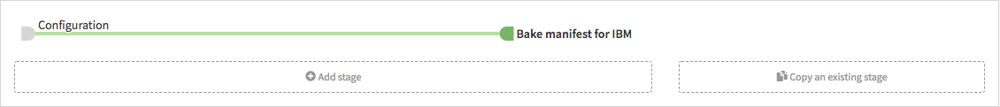

Spinnaker를 활용한 Helm chart 배포

이 페이지는 Spinnaker에서 Helm chart를 배포하는 방법에 대해 설명합니다.
자세한 내용은 Spinnaker 공식 가이드 문서의 Deploy Helm Charts를 참고하세요.
사전 준비
GitHub 계정 생성 및 저장소 fork
GitHub 계정을 생성하고 아래 저장소를 fork 합니다.
https://github.com/YunSangJun/my-charts
GitHub Webhook 설정
GitHub Artifact 설정
Application 생성
Spinnaker top menu > Applications > 우측 Actions dropbox > Create Application을 선택합니다.
아래와 같이 내용 입력 후 Create 버튼을 선택합니다.
- Name : helm-chart-demo
- Owner Email : 애플리케이션 소유자의 이메일
Pipeline 생성
Application top > PIPELINES > Configure a new pipeline을 선택합니다.
아래와 같이 내용 입력 후 Create 버튼을 선택합니다.
- Type : Pipeline
- Pipeline Name : Deploy helm chart
Pipeline 설정
Automated Triggers
Pipeline configuration > Automated Triggers > Add Trigger를 선택합니다.
아래와 같이 내용을 입력하고 Save Changes 버튼을 선택해 변경사항을 저장합니다.
- Type : Git
- Repo Type : github
- Organization or User : GitHub 조직명 또는 사용자 명.
예) https://github.com/YunSangJun/my-charts > YunSangJun이 사용자 명
- Project : my-charts
- Branch : master
- Secret : GitHub Webhooks 설정하기에서 입력한 secret
Expected Artifacts
Pipeline configuration > Expected Artifacts > Add Artifact를 선택합니다.
아래와 같이 내용을 입력하고 Save Changes 버튼을 선택해 변경사항을 저장합니다.
- Match against : GitHub
- File path : stable/demo-0.1.0.tgz
Bake Manifest
Helm chart로 부터 Kubernetes manifest를 생성하는 stage를 구성합니다.
Stage 추가
Pipeline > Configuration > Add stage를 선택합니다.
아래와 같이 내용을 입력하고 Save Changes 버튼을 선택해 변경사항을 저장합니다.
- Type : Bake(Manifest)
- Stage Name : Bake manifest for IBM
Stage 설정
아래와 같이 내용을 입력하고 Save Changes 버튼을 선택해 변경사항을 저장합니다.
- Render Engine : HELM2
- Name : demo
- Namespace : demo
- Expected Artifact : stable/demo-0.1.0.tgz
- Artifact Account : GitHub Artifact 설정하기에서 추가한 GitHub 계정
- Overrides :
- Key : ingress.enabled, Value : true
- Key : ingress.hosts[0], Value : 애플리케이션 호스트 명 입력(예: demo.ibm.example.com)
Produces Artifacts
Bake Manifest 설정을 완료하면 Produces Artifacts에 생성되는 Kubernetes Manifest에 대한 설정이 자동으로 설정됩니다.
이 설정을 다음 단계인 Deploy Manifest에서 사용합니다.
Multi cloud/cluster
추가로 다른 클라우드의 클러스터에 추가로 Helm chart를 배포해야 하는 경우 위와 같은 stage를 동일하게 추가하고 설정합니다.
이 페이지에서는 같은 Helm chart이지만 ingress의 host명을 다르게 해서 배포하도록 설정해보겠습니다.
Pipeline > Configuration > Add stage를 선택합니다.

아래와 같이 내용을 입력하고 Save Changes 버튼을 선택해 변경사항을 저장합니다.
- Type : Bake(Manifest)
- Stage Name : Bake manifest for GCP
- Render Engine : HELM2
- Name : demo
- Namespace : demo
- Expected Artifact : stable/demo-0.1.0.tgz
- Artifact Account : GitHub Artifact 설정하기에서 추가한 GitHub 계정
- Overrides :
- Key : ingress.enabled, Value : true
- Key : ingress.hosts[0], Value : 애플리케이션 호스트 명 입력(예: demo.gcp.example.com)
Deploy Manifest
생성한 Kubernetes manifest를 배포하는 stage를 구성합니다.
Stage 추가
Pipeline > Bake manifest IBM > Add stage를 선택합니다.
아래와 같이 내용을 입력하고 Save Changes 버튼을 선택해 변경사항을 저장합니다.
- Type : Deploy(Manifest)
- Stage Name : Deploy to IBM
- Depends On : Bake manifest for IBM
Stage 설정
아래와 같이 내용을 입력하고 Save Changes 버튼을 선택해 변경사항을 저장합니다.
- Account : IBM Kubernetes Account
- Manifest Source : Artifact
- Expected Artifact : b64 name:demo, type:embedded/base64(Bake Manifest에서 생성한 Kubernetes manifest)
- Artifact Account : embedded-artifact
Multi cloud/cluster
추가로 다른 클라우드의 클러스터에 추가로 Helm chart를 배포해야 하는 경우 위와 같은 stage 동일하게 추가하고 설정합니다.
Pipeline > Bake manifest GCP > Add stage를 선택합니다.
아래와 같이 내용을 입력하고 Save Changes 버튼을 선택해 변경사항을 저장합니다.
- Type : Deploy(Manifest)
- Stage Name : Deploy to GCP
- Depends On : Bake manifest for GCP
아래와 같이 내용을 입력하고 Save Changes 버튼을 선택해 변경사항을 저장합니다.
- Account : GCP Kubernetes Account
- Manifest Source : Artifact
- Expected Artifact : b64 name:demo, type:embedded/base64(Bake Manifest에서 생성한 Kubernetes manifest)
- Artifact Account : embedded-artifact
Helm chart 배포
Helm chart를 생성 또는 업데이트하여 이벤트를 발생시킵니다.
git clone https://github.com/Organization_Or_User/my-charts
cd my-charts
helm package demo
mv demo-0.1.0.tgz stable
helm repo index stable --url https://Organization_Or_User.github.io/my-charts/stable
git add --all
git push결과 확인
GitHub 저장소의 stable/demo-0.1.0.tgz에 변경사항이 있으면 Pipeline이 실행됩니다.
Pipeline status가 성공적으로 완료되면(SUCCEEDED) 서버자원이 생성된 것을 확인할 수 있습니다.
Service와 Ingress도 생성된 것을 확인할 수 있습니다.
Multi cloud/cluster에 배포한 경우 ingress host 주소가 다른 것을 확인 할 수 있습니다.
$ kubectl get ing -n demo
NAME HOSTS ADDRESS PORTS AGE
demo demo.ibm.example.com 169.xx.xxx.xxx 80 12h
$ kubectl get ing -n demo
NAME HOSTS ADDRESS PORTS AGE
demo demo.gcp.example.com 35.xx.xxx.xxx 80 12h